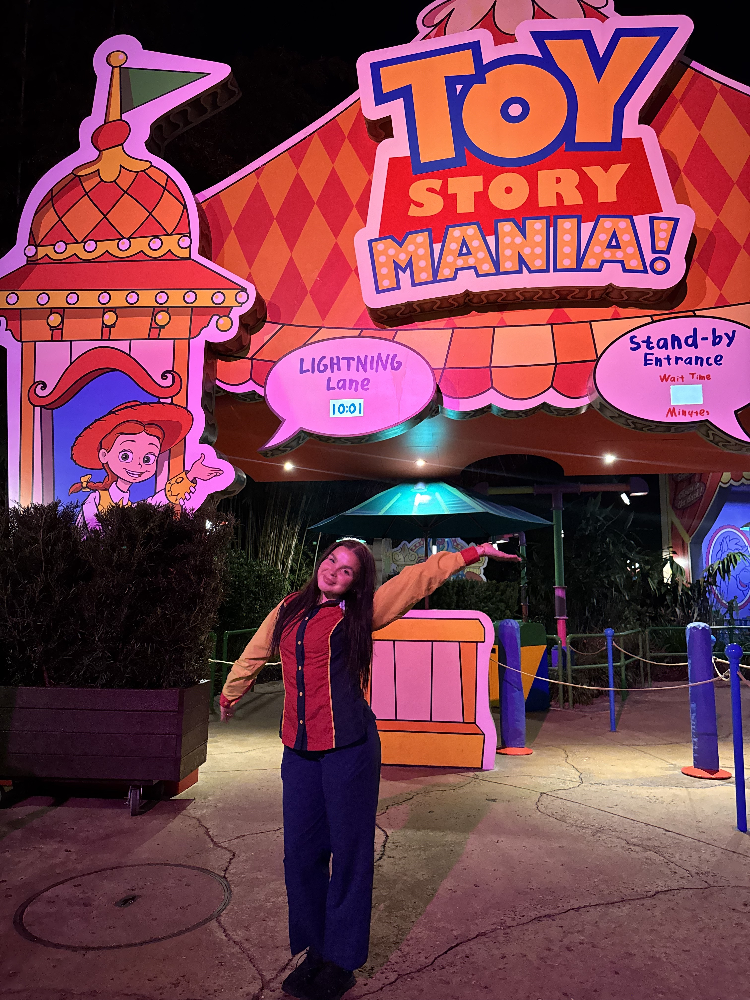

Work Experience
This page highlights my professional experience in operations, guest service, and office support.

Attractions Cast Member, Disney World Operations
2025
My experience with Disney strengthened my guest service, communication, adaptability, and teamwork in a fast-paced environment where safety and professionalism mattered every day.
- Operated ride systems and performed safety checks.
- Managed queues, accessibility support, and guest flow.
- Communicated clearly with guests from a wide range of backgrounds.
- Handled downtime procedures and supported operational standards.

FSL Student Assistant
April 2024 – September 2025
In this role, I supported daily office functions and helped keep communication, scheduling, and administrative systems organized and running smoothly.
- Managed emails, calls, and internal office communication.
- Updated rosters and schedules through ICS.
- Handled room reservations and TechConnect support.
- Compiled and distributed the community newsletter.